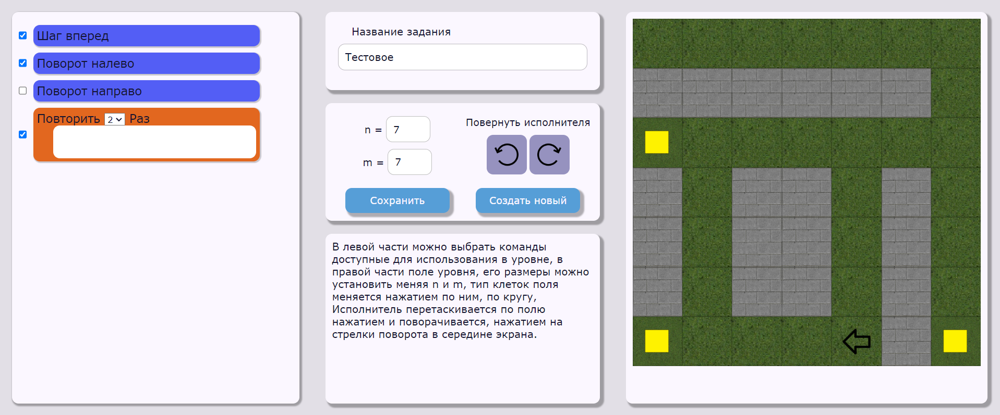

Справка к веб-приложению для обучения базовым навыкам программирования
- Разработка веб-приложения для обучения базовым навыкам программирования
- Введение
- Общие функции
- Функции ученика
- Функции учителя
- Функции администратора
Разработка веб-приложения для обучения базовым навыкам программирования
Введение
В выпускной работе спроектирована и реализована система, предназначенная для изучения базовых конструкций языков программирования. Система представляет собой web-приложение и работает в двух режимах: в режиме создания заданий и в режиме обучения. Система позволяет администратору создавать, удалять, изменять и настраивать уровни игры. В режиме обучения пользователь в игровой форме может выполнять последовательные тестовые задания, переходя с уровня на уровень.
Общие функции
Авторизация, запуск программы
Данная программная система поддерживает три роли пользователей: ученик, учитель, администратор. При запуске программной системы открывается страница авторизации, представленная на рисунке. Необходимо ввести логин и пароль в соответствующие поля, после чего пользователь может нажать кнопку или "Войти" для входа в системе.
Функции ученика
Выбор уровня
Ученик выбирает уровень для решения. Уже решенные уровни обозначаются зеленым, начатые - желтые, новые уровни - оранжевым
Решение уровня
Задание появляется при заходе на уровен, и при необходимости на нажатию на кнопку "i" Программа формироется перетаскиванием команд из левой чати экрана, запуск производиться по кнопке, сохранение и отправка задания учителю, также по кнопке После выполнения в поле исполнителя появлсяет надпись о результате работы

Функции учителя
Просмотр групп
После авторизации учитель попадает на страницу со списком групп, при нажатие на карандаш, учитель перейдет к редактированию соответствующей группы, при нажатии на диаграмму соответствующей группы
Редактирование группы
Учитель может менять название группы, при нажатии на + появляется список заданий не прикрепленных к группе, После нажатия, номера элементов меняются на + и -, при нажатии на + задание добавляется к группе, при нажатии на - открепляется, изменения созхзхраняются при нажатии на кнопку сохранить
Создание задания
При создании задания пользователю необходимо ввести название задания, задать размеры поля n и m, отметить команды доступные для решения задания галочкой слева После чего щелкая на клетки поля можно изменять их тип, а также перетаскивать исполнителя удерживая его, а также менять его угол повотора с помощью стрелок по середине Уровень сохраняется по нажатию кнопки сохранить, по нажатию создать новый страница обновляется до стандартных значений
Редактирование задания
Из всего списка заданий учителю для редактирования доступны только сделанные им, они обозначены карандашом, при нажатии на него происходит переход на страницу создания уровня, с данными соответствующими редактируемому уровню.
Просмотр статистики
Блоки представляют собой решения каждого из прикрепленных заданий каждым из Учеников группы, мы можем есть ли решение, оценку, и в случае наличия решения кнопку перехода на страницу проверки задания
Проверка задания
При проверке мы можем увидеть программу составленную учеников, запустить её на выполнение, а также выбрать оценку из выпадающего списка, при нажатии на кнопку сохранить, оценка будет выставлена
Функции администратора
Добавление пользователей
При нажатии на + появляется поля для ввода логина и пароля, при повторном нажатии + пользователь добавляется в систему (в случае если не возникло ошибок), при нажатии ^ окно поля для ввода логина и пароля закрываются
Удаление пользователей
Пользователь удаляется при нажатии на корзину, в случае если учитель припрекплен к группе или имеет созданные задания, появляется окно в котором пользователя просят подтвердить удаление
Работа с группами
При нажатии на + открывает поле для ввода названия новой группы, при повторном нажатии +, группа создается при нажатии на корзину группа удаляется, у случае если к группе привязаны ученики или задания пользователя просят подтвердить удаление в всплывающем окне при нажатии на карандаш пользователь переходит на страницу редактирования состветсвующей группы
Редактирование группы
Администратор может менять название группы, учителя прикрепленного к группе, при нажатии на + появляется список заданий не прикрепленных к группе, После нажатия, номера элементов меняются на + и -, аналогично с учениками при нажатии на + задание добавляется к группе, при нажатии на - открепляется, изменения сохраняются при нажатии на кнопку сохранить